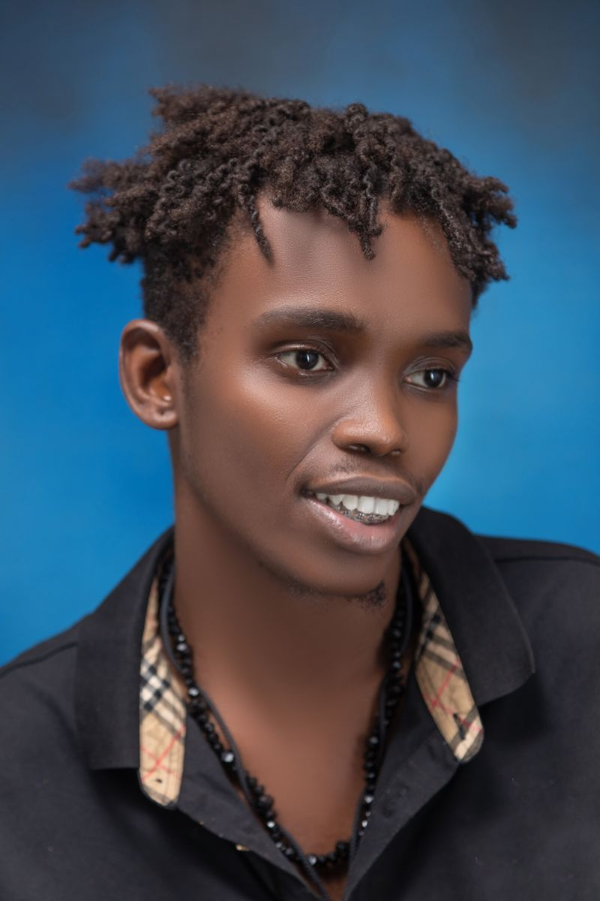
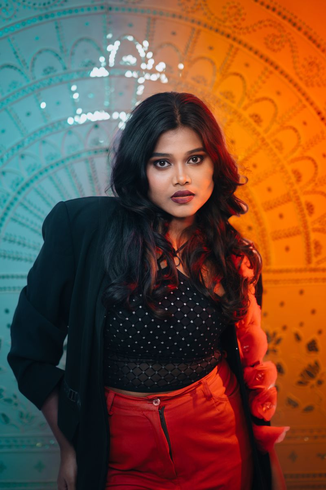

Discover your direction
Explore interests, ask the big questions, and map a path that feels like you.
BIG IDEAS. SMALL FIRST STEPS.
You don’t need to have it all figured out. Explore what’s possible with mentors who help you turn curiosity into confidence.
A little guidance can go a long way.
01 / THE POSSIBILITIES
Mentorship is a conversation, a new perspective, and someone in your corner. Here’s what our sample program is built around.
Explore interests, ask the big questions, and map a path that feels like you.
Practice communication, creative thinking, and practical problem solving through small projects.
Share ideas with supportive mentors and peers. Learn to give feedback and ask for help.
BETTER, TOGETHER
Try a new idea, work through a challenge, or celebrate a small win. Learning grows when we share it.
Try a learning activity ↗02 / PEOPLE IN YOUR CORNER
Different paths. Shared curiosity. Meet three fictional mentors who show the kinds of guidance you might explore.
Design & creative thinking
“Your perspective is a great place to start.”

BUILDTechnology & problem solving
“Big ideas begin with a small experiment.”

LEADLeadership & communication
“Your voice matters. Let’s help it grow.”
Demo profiles • Names, roles, and quotes are fictional. Stock photos illustrate the profiles; the people pictured are not affiliated with this program.
03 / YOUR CURIOSITY TOOLKIT
Start here, at your own pace. Open a resource for a short activity you can try today.
Write down three things you enjoy, two things you want to learn, and one question you would ask a mentor. Circle the idea that excites you most.
Bring one goal, one recent challenge, and one question. Ask your mentor how they approached a similar situation. Finish by choosing a small action to try before your next conversation.
What did you try? What surprised you? What would you change? Write one sentence for each, then choose a next step you can finish in 20 minutes.
04 / YOUR NEXT CHAPTER
Explore a sample mentorship path. Choose an interest and see a suggested first step.